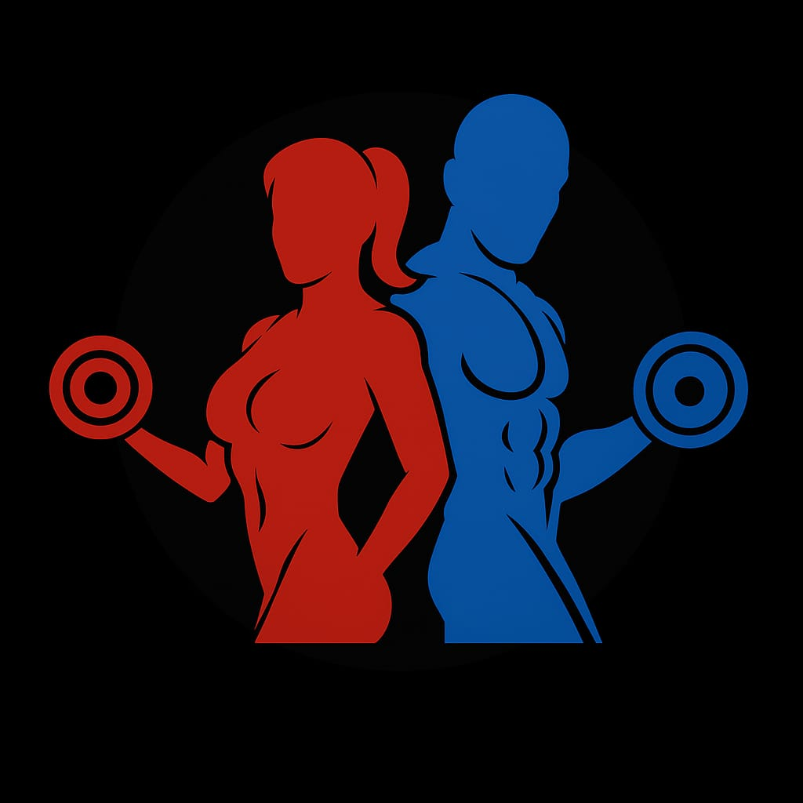

permite fortalecer los músculos de manera más específica y equilibrada, mejorando tanto la fuerza como la resistencia. Las mancuernas ayudan a trabajar cada lado del cuerpo por separado, lo que corrige desequilibrios musculares y mejora la coordinación. Además, permiten una gran variedad de movimientos y niveles de intensidad según el peso que se use. Algunos ejercicios básicos que se pueden realizar con mancuernas son el press de hombros, las flexiones de bíceps, las extensiones de tríceps, las sentadillas con peso y los pesos muertos. Estos ejercicios ayudan a tonificar el cuerpo, aumentar la masa muscular y fortalecer articulaciones y tendones.